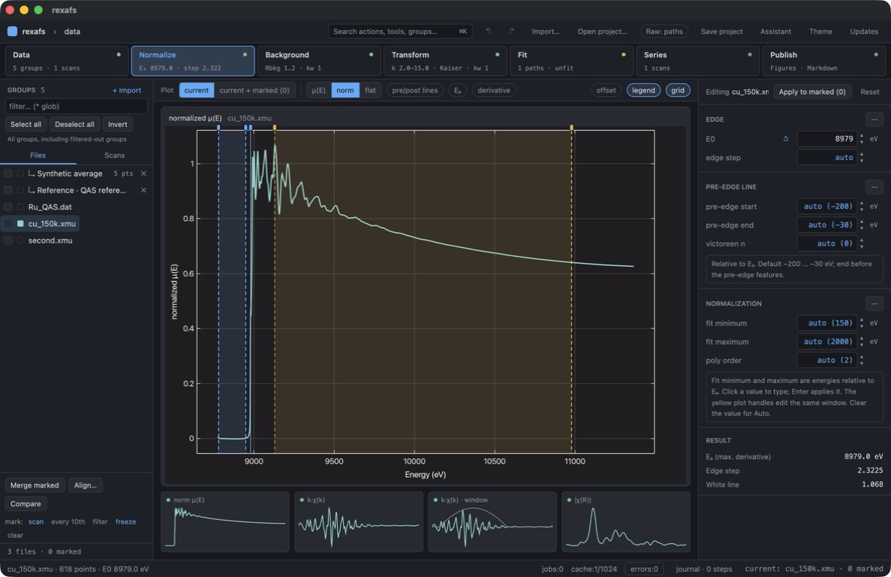
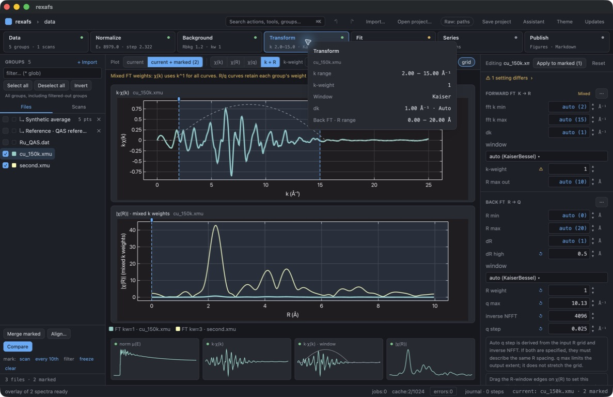
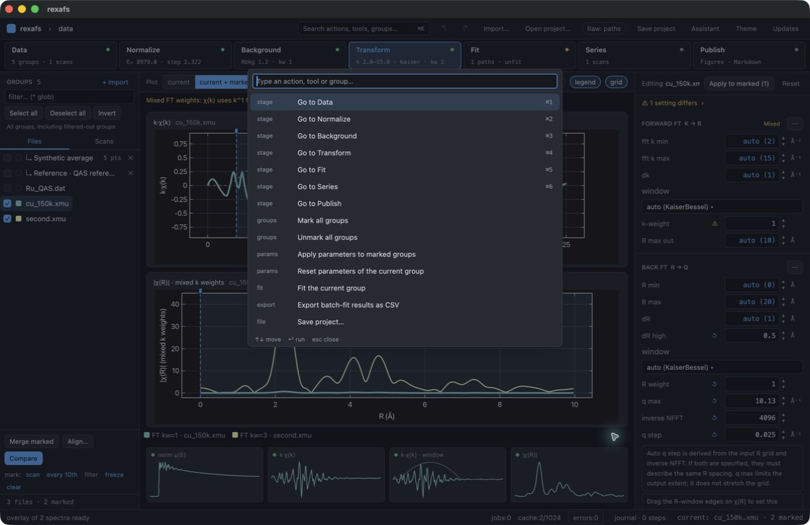
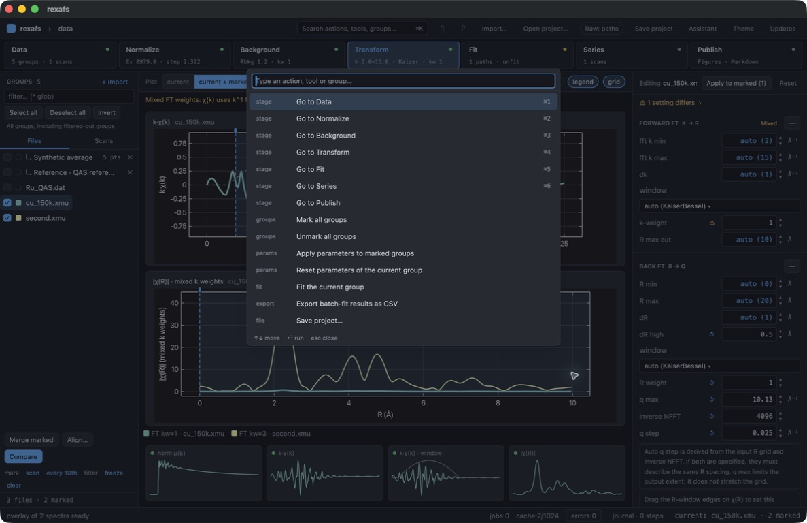
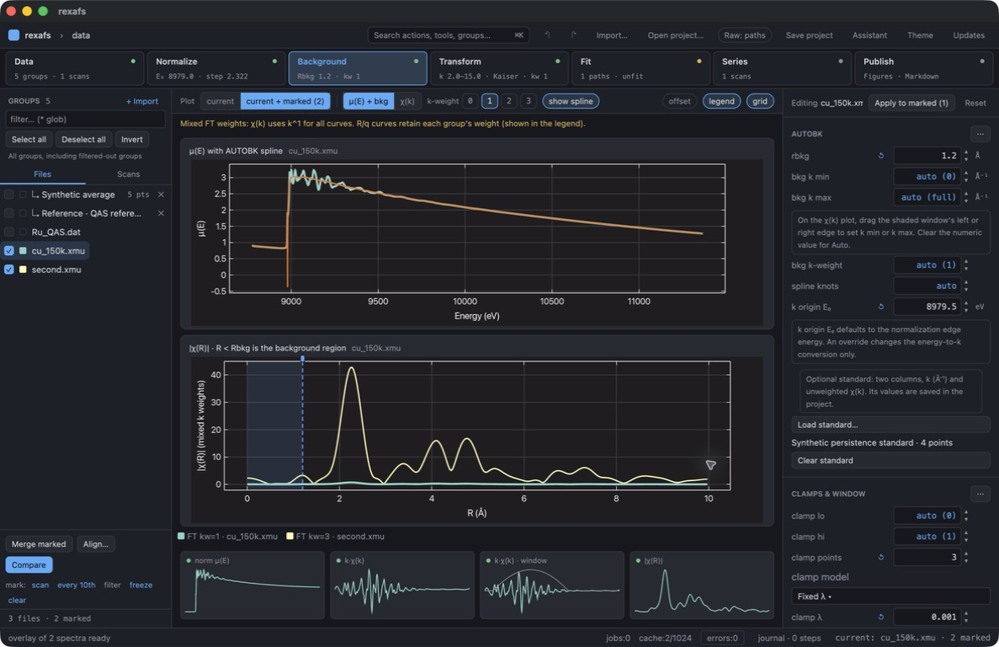
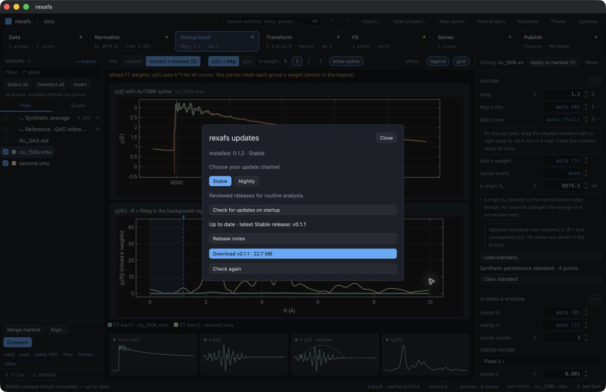
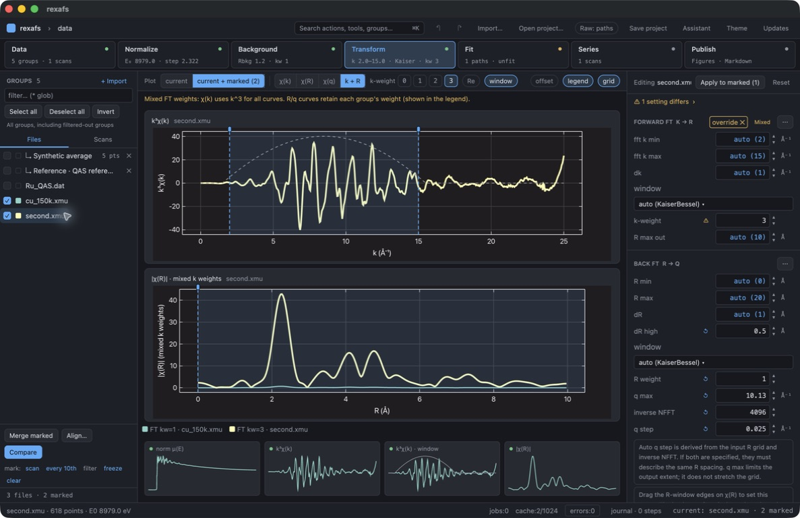

01. 01-baseline.png
Identical Cu spectra are configured with Fourier weights 1 and 3, using an isolated copied project.

The 0.1.2 candidate with follow-up overlay and palette corrections on macOS ARM. Captions distinguish observed failures, corrections and passing checks. See README.md for validation status.
Identical Cu spectra are configured with Fourier weights 1 and 3, using an isolated copied project.

Both Cu groups are marked. The k-space overlay uses the active k weight; Fourier plots retain the independently processed weights and state that explicitly.

Open the palette over a mixed-weight comparison before sending scroll and stage shortcuts.

Scrolling over the exposed R plot and Cmd+5 do not zoom the plot or change the Transform stage while the palette is open.

Escape closes the palette; Cmd+3 then switches to Background, demonstrating restored keyboard focus.

Executing the Updates command from the palette focuses the update dialog correctly.

Switching the active group to FT weight 3 changes every chi(k) display curve to k cubed; the identical spectra still coincide and the Fourier curves retain their different results.
